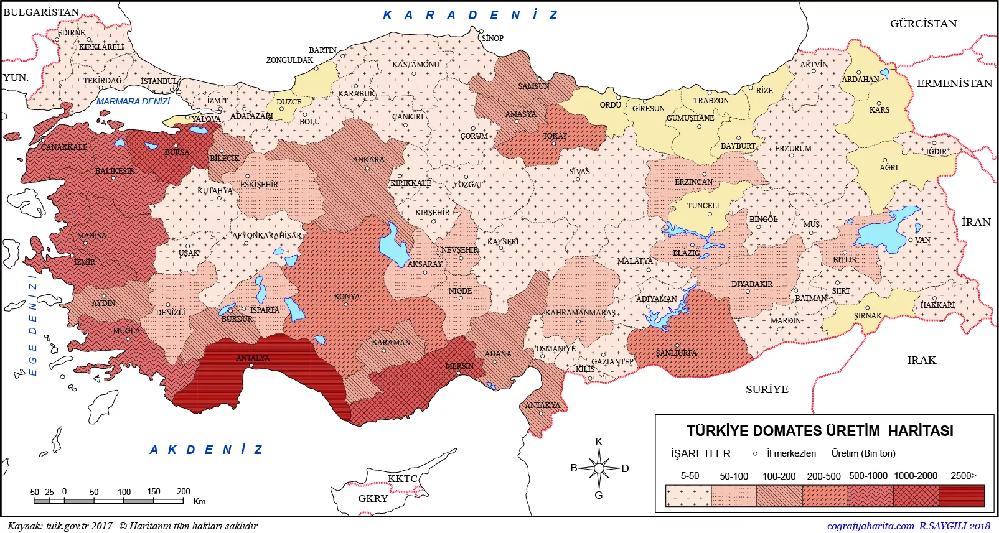

Domatesin kalorisi de düşük
Domates yaz aylarında yemekleri lezzetlendirip kahvaltıları renklendirir. Salataların da vazgeçilmez malzemesi olan domates, bir meyve olsa da pek çok kişi tarafından sebze kabul edilir. Ortalama bir domates, yaklaşık 22 kalori olup 5 gram karbonhidrat, 3 gram şeker, 1,5 gram lif içerir. Düşük kalori ve karbonhidrata sahip domates, besin değerleri açısından da zengindir.
1.) Vitamin Zengini
Bir domates ile günlük C vitamini ihtiyacınızın yüzde 40’ını karşılayabilirsiniz. A vitamini deposu da olan domates, bağışıklığınızı ve cilt sağlığınızı korumaya yardımcıdır. K vitamin ile kemiklerinize, potasyum ile kalp sağlığınıza destek olur. Ayrıca kas kasılmalarına karşı olup kan basıncınızın düzenlenmesinde önemli rol oynar.
2.) Kalbinize ‘Kırmızı Güç’
Domatese kırmızı rengini veren likopen adlı antioksidandır. Araştırmalar, likopen takviyesi yerine domatesin kendisini tüketmenin daha faydalı olduğunu ortaya koyuyor. Ayrıca diyabet, kalp hastalıkları ve krizi riskini düşürmeye yardımcı olur.
3.) Keskin Gözler İçin
Likopen gözleriniz için de faydalıdır. Araştırmalar, lutein ve beta karoten de içeren domatesin katarakt ve sarı nokta gibi hastalıklara karşı gözleri koruduğunu gösteriyor.
4.) Kabızlığa Yatkınsanız…
Domatesin su ve liften oluştuğu için hazımsızlığa karşı yardımcı olduğunu biliyor musunuz? Yüzde 90’ı su olan bu meyve 1,5 gram lif içerir. Kabızlık sorunu olanların beslenmelerinde yer vermesi destek olabilir. Ancak bazı kişiler için pişmiş domates asidik yapısı nedeniyle reflü veya hazımsızlığı tetikleyebilir.
5.) Diyabet Kontrolü
‘Kırmızı güç’, tip 2 diyabete karşı koruyucu bir besindir. Ayrıca diyabeti olanlar için daha büyük risk anlamına gelen kalp krizi ve felç riskine karşı da tüketilmesi önemlidir.
6.) Cilt Yaşlanmasına Engel
Bir araştırmaya göre, domates ve zeytinyağının birlikte tüketilmesi güneşin zararlarından korurken cildin yapısını sağlam ve genç kalmasını sağlayan kolajen üretimini artırıyor. Bilim insanları, domatesteki likopenin anahtar antioksidan olduğunu düşünüyor. Pişmiş domates zeytinyağıyla birleşirse sindirim sisteminden kan dolaşımına kadar yüksek bir etkiye sahip.
7.) Likopen Kansere De Karşı
Araştırmalar, yine likopenin kansere düşman olduğunu gösteriyor. Prostat, yumurtalık, akciğer ve mide kanseri için koruyucu bir etki gösterdiği belirtiliyor.
Domatesin faydaları saymakla bitmez. Peki bu ‘kırmızı fayda’ nasıl tüketilebilir? Hem kuru hem tazesini kullanabileceğinizi domatesi salatalarınıza, omletlerinize ekleyebilirsiniz. Izgara yemeklerinizi de domatesle lezzetlendirebilirsiniz. Domatesle çeşitli soslar yapabilirsiniz. Ancak salça tüketmek isterseniz tuz miktarına dikkat etmelisiniz.
